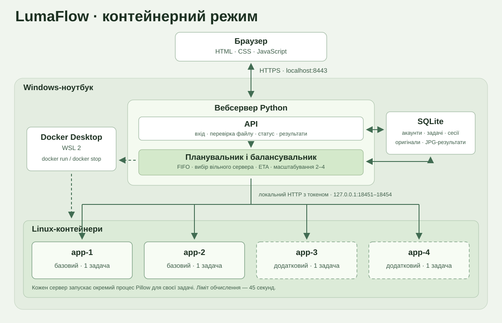

LumaFlow від запуску до захисту
Ти завантажуєш фотографію. Застосунок ставить її в чергу, один із серверів прибирає шум, а браузер показує прогрес і дає завантажити JPG.
Запуск на Windows
Звичайний запуск
- Відкрий папку
LumaFlowу Провіднику. - Двічі натисни
Start-LumaFlow.cmd. - У браузері зареєструйся. У Студії натисни Спробувати демо, потім Запустити обробку.
- Після обробки відкрий Історію. У записі видно результат і сервер, який обробив фото.
Запускаються два сервери застосунків і окремий вебсервер. Docker для цього запуску не потрібен.
Запуск для бала за контейнери
- У Пуску знайди PowerShell, натисни Запуск від імені адміністратора.
- Виконай
wsl --install --no-distribution. Якщо Windows просить, перезавантажся. Перевірwsl --version. - Встанови Docker Desktop, обери WSL 2 і відкрий Docker Desktop. Зачекай готовності рушія.
- Дочекайся завершення поточних задач і двічі натисни
Start-LumaFlow-Docker.cmd. Перший запуск збирає образ, далі відкриває сайт із двома контейнерами.
Повідомлення про Linux під час WSL — очікуване. WSL дає Docker змогу запускати Linux-контейнери на твоєму Windows-ноутбуці. Сайт, Провідник і браузер ти відкриваєш у Windows як завжди.
Перевірка Docker перед запуском. Відкрий звичайний PowerShell і виконай docker info --format "{{.OSType}}". Якщо бачиш linux, рушій у потрібному режимі. Під час першої збірки потрібен доступ до Docker Hub і PyPI.
Хто що робить

| Частина | У LumaFlow | Навіщо |
|---|---|---|
| Frontend | HTML, CSS і JavaScript | Інтерфейс у браузері. Він вибирає файл, надсилає запит і відображає відповіді. |
| Вебсервер і API | Python, HTTPS, порт 8443 | Приймає запити, перевіряє користувача та файл і записує задачу. |
| Балансувальник | Scheduler у процесі вебсервера | Бере найстарішу задачу і передає її вільному серверу, який найдовше не отримував задач. |
| Сервери застосунків | app-1 і app-2, за потреби app-3 і app-4 | Кожен окремо приймає і виконує одну задачу одночасно. У контейнерному режимі кожен має власний контейнер. |
| База даних | SQLite | Зберігає користувачів, сесії, чергу, статуси, оригінали та JPG-результати. |
| Docker | Локальний рушій Linux-контейнерів | На команду планувальника запускає додаткові контейнери й зупиняє їх після простою. |
Як читати схему одногрупників
На їхній схемі теж є браузер, сервер, балансувальник, кілька worker-серверів, база та Docker. Nginx у них є входом для запитів, FastAPI приймає API-запити, WebSocket передає оновлення, PostgreSQL зберігає дані. У LumaFlow вебсервер одразу віддає сторінку та приймає API-запити. Браузер регулярно запитує стан через HTTPS, а дані зберігає SQLite. Окрема фізична машина на схемі одногрупників показує їхній спосіб розміщення додаткового сервера. За наданою умовою можна показати кілька незалежних серверів застосунків на одному ноутбуці.
Що відбувається після кліку
- Браузер надсилає
POST /api/jobsз файлом. Вебсервер перевіряє сесію, розмір і формат. - База записує файл і статус
queued. Відповідь202 Acceptedозначає, що задачу прийнято. Браузер отримує її ID і може показати чергу. - Планувальник резервує вільний сервер. Той запускає окремий процес для обробки Pillow. Початок виконання змінює статус на
running. - Після кожної смуги зображення обчислення повідомляє свій прогрес. Планувальник читає стан із сервера, а браузер оновлює сторінку запитами
GET /api/jobs. - Завершений JPG разом зі статусом потрапляє в SQLite. Браузер показує результат і кнопку завантаження.
Що показати на захисті
- Відкрий умову викладача, схему й застосунок. Для пункту 7 запусти
Start-LumaFlow-Docker.cmdта відкрий вкладку Containers у Docker Desktop. - У папці проєкту відкрий
.runtime\admin.jsonі ввійди в застосунок якadmin. Тримай файл із паролем закритим під час демонстрації. - У Моніторингу до навантаження покажи
app-1іapp-2. У Docker видно імена двох контейнерів. У локальному режимі порівняй PID двох процесів. - Натисни Запустити 6 демозадач. Покажи різні назви в колонці сервера, відсоток, чергу й очікування. Після черги з’являться
app-3іapp-4. - В Історії скасуй одну задачу в черзі й одну активну. Після завершення іншої відкрий результат, пересунь повзунок порівняння та завантаж JPG.
- Покажи відхилення великого зображення. Граничний час обчислення 45 с, а автотест окремо перевіряє примусову зупинку процесу.
- Зачекай близько 16 секунд після завершення роботи. Додаткові сервери підуть, а два базові залишаться. Історія доступна і після перезапуску.
Перевірка без ручного натискання
Відкрий PowerShell у папці LumaFlow. Команда з -Mode docker запускає окремий тестовий екземпляр і перевіряє HTTPS, різні ID контейнерів і перехід 2 → 4 → 2. Перший запуск застосунку в Docker збирає потрібний образ.
powershell -NoProfile -ExecutionPolicy Bypass -File .\Run.ps1 -Action verify
powershell -NoProfile -ExecutionPolicy Bypass -File .\Run.ps1 -Action verify -Live
powershell -NoProfile -ExecutionPolicy Bypass -File .\Run.ps1 -Action verify -Mode dockerПерша команда перевіряє поведінку бекенду. Друга й третя перевіряють ще й справжнє HTTPS-з’єднання. Тестова база створюється окремо від історії користувача.
У якому порядку читати код
| Файл | Знайди в редакторі | Що прочитати |
|---|---|---|
public/index.html | start-job | Кнопка обробки. Атрибут id дає JavaScript змогу знайти її. |
public/app.js | startJob, refresh, renderTask | Надсилання файлу, регулярний запит стану й оновлення відсотка на екрані. |
lumaflow/gateway.py | route, create_job | Маршрут запиту, доступ, валідація та реєстрація задачі. |
lumaflow/store.py | submit, assign, finish | Обмеження кількості задач і збереження в SQLite. |
lumaflow/scheduler.py | cycle, dispatch, eta, scale | Один цикл планувальника, розподіл, прогноз очікування та запуск серверів. |
lumaflow/worker.py | begin, watch, compute | Створення процесу, контроль часу, скасування й запуск обробки. |
lumaflow/images.py | restore | Медіанний фільтр по смугах, прогрес, підсилення контурів, збереження JPG. |
lumaflow/config.py, tls.py, Dockerfile | TIME_LIMIT, server_context, ENTRYPOINT | Ліміти, HTTPS та команда запуску контейнера. |
Перший розбір по рядках
Наприкінці GatewayHandler.create_job є ці три рядки. Тут app — об’єкт застосунку, user — дані поточного користувача, а self — обробник одного HTTP-запиту.
job = app.store.submit(user["id"], filename, width, height, media, profile, data)
job["queue"] = app.scheduler.eta(app.store.jobs(statuses=config.ACTIVE)).get(job["id"])
return self.send_json(202, {"job": job})app.store.submit(...)звертається до коду бази даних.user["id"]визначає власника.filename, розміри,mediaіprofile— метадані,data— байти файлу. Повернений словник зберігається вjob.app.store.jobs(statuses=config.ACTIVE)дістає активні задачі.eta(...)для черги оцінює час та позиції..get(job["id"])вибирає оцінку саме нашої задачі, якщо вона ще в черзі.send_jsonперетворює словник на відповідь для браузера. Код202означає «прийнято до обробки».returnзавершує обробник HTTP-запиту.
Медіанний фільтр одним прикладом
Припустімо, дев’ять сусідніх значень яскравості після сортування — 89, 90, 90, 91, 91, 92, 92, 93, 255. Центральне, п’яте значення дорівнює 91. Окрема дуже світла точка 255 має мало впливу на медіану. Так можна зменшити шум типу «сіль і перець».
Що таке репозиторій
Git зберігає версії коду. Коміт — знімок файлів у певний момент. Локальний Git-репозиторій уже створено в папці проєкту. GitHub дає змогу розмістити копію репозиторію онлайн і надіслати викладачу посилання. Адреса GitHub веде на код. Сайт для демонстрації відкривається на твоєму ноутбуці за https://localhost:8443.
git status
git log --onelineЯкщо потрібна саме адреса GitHub, створи новий порожній репозиторій під своїм акаунтом. Вибери доступ за вимогами викладача. Для приватного репозиторію викладачу потрібно дати доступ. Під час створення залиш пункти README, .gitignore і license порожніми, адже файли вже є локально. Далі скопіюй HTTPS-адресу репозиторію й виконай у папці LumaFlow:
git remote add origin https://github.com/ТВІЙ-ЛОГІН/НАЗВА.git
git push -u origin mainПідстав свою адресу. Git може попросити ввійти в GitHub. Папки .runtime і .venv ігноруються. У репозиторій входять код, демозображення, інструкції та схеми.
В архіві є LumaFlow.bundle з історією Git. Щоб відновити репозиторій на іншому комп’ютері з Git, у папці з цим файлом виконай git clone .\LumaFlow.bundle LumaFlow-git.
Питання, які можуть поставити
Де саме балансування, якщо сайт один?
Один вебсервер приймає запити браузера. У ньому планувальник розподіляє обчислення між окремими серверами застосунків. Покажи Scheduler.dispatch і дві різні назви в історії.
Чим відрізняється черга від балансувальника?
Черга визначає, яка задача чекає першою. Балансувальник визначає, який вільний сервер її візьме.
Чому браузер не зависає під час обробки?
Вебсервер швидко повертає 202 та ID. Фільтрація відбувається в дочірньому процесі сервера застосунків, а браузер окремо запитує статус.
Хто і коли додає третій і четвертий сервер?
Scheduler.scale перевіряє чергу. Коли задачі очікують приблизно 1,4 с і для всіх не вистачає базових серверів, він додає сервери до ліміту 4. У Docker-режимі це окремі контейнери. Після 16 с простою зайві зупиняються.
Чому час очікування приблизний?
Він залежить від розміру, профілю, прогресу попередніх задач і завантаження комп’ютера. Планувальник уточнює оцінку під час наступних перевірок.
Що показує HTTPS?
З’єднання між браузером і вебсервером шифрується TLS. Проєкт використовує локальний сертифікат для localhost. У режимі Docker внутрішні запити до worker ідуть по локальному HTTP, перевіряються внутрішнім токеном і доступні тільки через порти на 127.0.0.1.